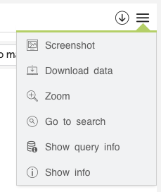
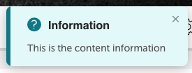

Each widget container could have a series of custom actions to increase its usability. There are a series of actions that are included in Devo Applications Builder.
Normally, these actions are arranged in the header menu of each widget:
You can manage the display of these actions according to your convenience.
The visualization of the actions is done directly from the src/app.html file.
Within the HTML element <ul>, included in the widget's header, all the actions to be displayed are included. Delete or add the ones you need.
<ul>
<li class="lt-vapp-widget-action-capture">
<i class="lticon-polaroid_picture_image_photo"></i>
<span>${__('Screenshot')}</span>
</li>
<li class="lt-vapp-widget-action-download">
<i class="lticon-computer_laptop_download"></i>
<span>${__('Download data')}</span>
</li>
<li class="lt-vapp-widget-action-zoom">
<i class="lticon-zoom_in"></i>
<span>${__('Zoom')}</span>
</li>
<li class="lt-vapp-widget-action-gotosearch">
<i class="lticon-search_find_zoom2"></i>
<span>${__('Go to search')}</span>
</li>
<li class="lt-vapp-widget-action-showquery">
<i class="lticon-query_info"></i>
<span>${__('Show query info')}</span>
</li>
<li class="lt-vapp-widget-action-info">
<i class="lticon-info_about_round_bold"></i>
<span>${__('Show info')}</span>
</li>
</ul>
You can change the order, texts and icons.
In the end, the important thing about actions is that the clickable item has the class corresponding to each action.
These classes have the form lt-vapp-widget-action-[ACTION].
Download data
This action allows the user to download the data obtained from the query. This action is linked to the downloadCSV() method of each widget, which is defined in the mixins.
When the user selects this option, the data is downloaded and saved in a file (as long as the widget has that method defined).
Class that triggers the event: lt-vapp-widget-action-download.
For more info, visit download.
Go to search
This action allows executing the query of the widget in the Data search. Not all queries can be executed in X because there are operations that are not compatible. To solve this problem you could use the methods setUseMainRequestForSearch and setSearchRequest.
Class that triggers the event: lt-vapp-widget-action-gotosearch.
For more info, visit dataSearch.
Screenshot
This method allows you to take a screenshot of the widget and download it.
Class that triggers the event: lt-vapp-widget-action-capture.
For more info, visit screenshot.
Show info
Allows you to view a description of the graph if it has been added in the application.
To add a description of the widget, use the setInfo() method.
widget.setInfo({
title: 'Information',
content: 'This is the content information',
});
And when the user clicks on this option they will see a notification like the following:
Class that triggers the event: lt-vapp-widget-action-info.
For more info, visit info.
Show query
Allows you to view the query or queries related to the widget if it has been added in the application.
To add a query information of the widget, use the setInfoQuery() method.
Simple query
You can use a custom query.
widget.setInfo({
title: 'Information',
query: `
from demo.ecommerce.data
group by method
select count() as count
`,
});
or use the query defined in the request.
widget.setInfoQuery({
title: 'Information',
query: requests.get('charRequest'),
});
Multiple queries
widget.setInfoQuery({
title: 'Information',
query: [
{
query: `
from demo.ecommerce.data
group by method
select count() as count
`,
},
{
title: 'siem.logtrust.web.activity table',
query: `
from siem.logtrust.web.activity
group by method
select count() as count
`,
},
],
});
Class that triggers the event: lt-vapp-widget-action-showquery.
For more info, visit showQuery.
Zoom
Allows the user to have an expanded view of the widget.
Class that triggers the event: lt-vapp-widget-action-zoom.
For more info, visit zoom.